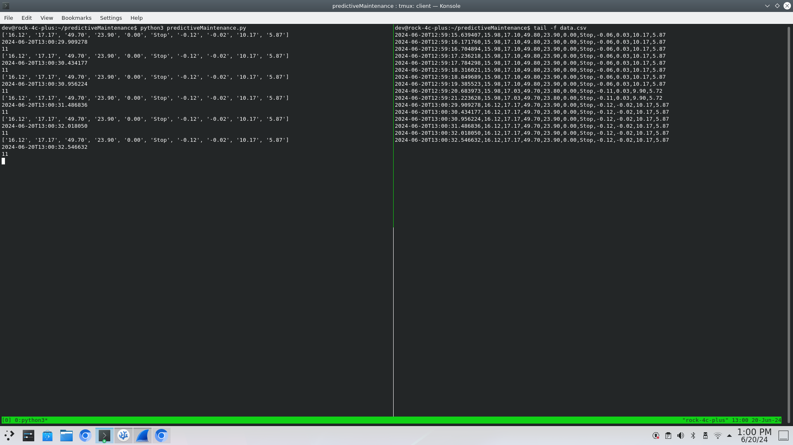

Building a Predictive Maintenance Script in Python
This section will help you build a Python script for predictive maintenance, step by step. The script will request data over HTTP and write the data to a specified location.
Step 1: Create the Directory
First, let's create a directory to store your script and related files.
Open your terminal and run the following command:
$ mkdir ~/predictiveMaintenance
Explanation:
mkdiris used to create a new directory.~represents your home directory,predictiveMaintenanceis the name of the directory.
Step 2: Navigate to the Directory
Change to the newly created directory:
$ cd ~/predictiveMaintenance
Explanation:
cdstands for "change directory". This command moves you into thepredictiveMaintenancedirectory.
Step 3: Create the Python Script File
Create a new Python file called predictiveMaintenance.py using a text editor. You can use either nano or vim.
Using nano:
$ nano predictiveMaintenance.py
Using vim:
vim predictiveMaintenance.py
Explanation:
- These commands open a text editor (
nanoorvim) and create a new file calledpredictiveMaintenance.py.
Step 4: Add Header Information
Start by adding the header information to your script:
# FILE: predictiveMaintenance.py
# AUTHORS: Name of everyone who is in your team
# Version: 1.0.0
# NOTES: Script requests data over HTTP and writes it to a specified location.
Explanation:
- These comments provide metadata about the script, including the filename, author, version, and a brief description of what the script does.
Step 5: Import Required Packages
Next, import the necessary Python packages:
...
import requests
import csv
import os
import sys
from datetime import datetime
import time
Explanation:
...indicates to you, that there is more code above but it is not shown for brevity, do not write...requests: Allows you to send HTTP requests.csv: Provides functionality to read from and write to CSV files.os: Provides a way of interacting with the operating system.sys: Provides access to system-specific parameters and functions.datetime: Supplies classes for manipulating dates and times.time: Provides various time-related functions.
Step 6: Define Constants
Define constants for the data log path and delay between requests:
...
# The path to the data log
data_log_csv = '/home/rock/predictiveMaintenance/data.csv'
# Delay (in seconds)
delay = 0.5
Explanation:
data_log_csv: Specifies the path to the CSV file where data will be logged.delay: Sets a delay of 0.5 seconds between each data request.
Step 7: Create the Main Loop
Write the main loop that will run indefinitely. Add the following code to your script:
Step 7.1: Start the Main Loop
...
# Run forever, or until the program is killed
while True:
Explanation:
- This creates an infinite loop that will run continuously until the program is manually stopped.
Step 7.2: Try Block
...
while True:
try:
Explanation:
- This starts a
tryblock to handle any exceptions that might occur during the execution of the code inside the loop.
Step 7.3: Perform a GET Request and Decode the Response
...
while True:
try:
# Perform a GET request from the ESP8266
r = requests.get('http://192.168.4.1/sbc')
# Decode the response and split by the delimiter ','
data = r.content.decode("ascii").split(',')
Explanation:
- The first new line sends an HTTP GET request to the specified URL (
http://192.168.4.1/sbc) to retrieve data from the ESP8266 device.- The second new line decodes the response content from ASCII format and splits it into a list using a comma as the delimiter.
Step 7.4: Print the Data
For debugging purposes we can return the the decoded response to the terminal:
...
while True:
try:
# Perform a GET request from the ESP8266
r = requests.get('http://192.168.4.1/sbc')
# Decode the response and split by the delimiter ','
data = r.content.decode("ascii").split(',')
print(data)
Step 7.5: Add a Timestamp
...
print(data)
# Prepend the timestamp with microsecond precision
timestamp = datetime.now().isoformat(timespec='microseconds')
data.insert(0, timestamp)
Explanation:
datetime.now().isoformat(timespec='microseconds'): Gets the current timestamp with microsecond precision and formats it as a string.data.insert(0, timestamp): Inserts the timestamp at the beginning of the data list.
Step 7.6: Check Data Length
...
data.insert(0, timestamp)
# Check message is the correct length (timestamp + data)
if len(data) == 11:
Explanation:
- This checks if the length of the data list is 11 (timestamp plus 10 data points). We don't want to write missing data points.
Step 7.7: Check if File Exists
...
if len(data) == 11:
# Check if the file exists, if not, create it or fail and close the program
if not os.path.exists(data_log_csv):
Explanation:
- This checks if the CSV file specified by data_log_csv exists. If it does not exist, the following code block will create it.
Step 7.8: Create and Write Headers to CSV
...
# Check if the file exists, if not, create it or fail and close the program
if not os.path.exists(data_log_csv):
with open(data_log_csv, mode='w', newline='') as file:
writer = csv.writer(file)
# Set first row headers
writer.writerow(['TimeStamp','TMP36_Temp',
'DHT11_Ambient_Temp','DHT11_Humidity',
'Motor_Temperature','Motor_Speed_(RPM)',
'Motor_State','Accel_x-axis','Accel_y-axis',
'Accel_z-axis', 'RMS_Vibration'])
Explanation:
with open(data_log_csv, mode='w', newline='') as file:: Opens the CSV file in write mode. If the file doesn't exist, it will be created.csv.writer(file): Creates a CSV writer object.writer.writerow([...]): Writes the header row to the CSV file.
Step 7.9: Append Data to CSV
...
# Check if the file exists, if not, create it or fail and close the program
if not os.path.exists(data_log_csv):
...
# Append CSV with the data
with open(data_log_csv, mode='a', newline='') as file:
writer = csv.writer(file)
writer.writerow(data)
Explanation:
with open(data_log_csv, mode='a', newline='') as file:: Opens the CSV file in append mode to add new data without overwriting the existing content.csv.writer(file): Creates a CSV writer object.writer.writerow(data): Writes the data row to the CSV file.
Step 7.10: Add Delay
...
# Append CSV with the data
with open(data_log_csv, mode='a', newline='') as file:
writer = csv.writer(file)
writer.writerow(data)
# Add delay
time.sleep(delay)
Explanation:
- This pauses the script for the duration specified by delay (0.5 seconds).
Step 7.11: Exception Handling
# Run forever, or until the program is killed
while True:
try:
...
# Any exceptions are caught and returned to the CLI
except Exception as e:
print(f"Error: {e}")
print("Unable to create or write to the CSV file. Program will now exit")
sys.exit(1)
Explanation:
except Exception as e:: Catches any exceptions that occur during the execution of thetryblock.print(f"Error: {e}"): Prints the error message to the terminal.print("Unable to create or write to the CSV file. Program will now exit"): Prints an error message indicating that the program will exit.sys.exit(1): Exits the program with an error code of 1.
Step 8: Making the script an executable
Before running the script, ensure you have the necessary permissions. Make the script executable:
$ chmod +x predictiveMaintenance.py
Explanation:
The
chmodcommand in Unix/Linux systems is used to change the file mode bits of a file. These bits determine the file's permissions. >> - The+xargument specifically adds execute permissions to the file for the user, group, and othersFor example, before
chmod +x, the file permissions might look like this:-rw-r--r-- 1 user group 4096 Jun 14 12:34 predictiveMaintenance.pyAfter running chmod +x, the permissions change to:
-rwxr-xr-x 1 user group 4096 Jun 14 12:34 predictiveMaintenance.py
Step 9: Running the script:
You should be able to run the script like this:
$ ./predictiveMaintenance.py
or
$ python3 predictiveMaintenance.py
The output should look like:
>
If you open another terminal, ctrl+t, you can look in the content of the data.csv file:
$ tail -f predictiveMaintenance/data.csv
or
$ less +G predictiveMaintenance/data.csv
You can download some example data captured before: data.csv
The output these commands should look something like this, and everytime there is a change you get an additionally line with the latest data.
You can download some example data captured before: data.csv

Step 10: Gathering the Data
We need to let the data run for some time to build a large enough data set for any predictive modelling. We can estimate the number lines generated over a given period, as we know that there is a delay of ~500ms. So roughly 2 every second, calculate how many data points you can have for:
- 1 min
- 15 mins
- 30 mins
- 60 mins
- 120 mins
- 240 mins
from each of these we can calculate the file size in BiBytes for the CSV for each
Full Code Here
# FILE: predicitiveMaintenance.py
# AUTHOR: Seb Blair (CompEng0001)
# Version: 1.0.0
# NOTES: script requests the data over HTTP and then writes the data to a specified location.
import requests
import csv
import os
import sys
from datetime import datetime
import time
# Run forever, or until the program is killed
while True:
try:
# Perform a GET request from the ESP8266
r = requests.get('http://192.168.4.1/sbc')
# Decode the response and split by the delimiter ','
data = r.content.decode("ascii").split(',')
print(data)
# Prepend the timestamp with microsecond precision
timestamp = datetime.now().isoformat(timespec='microseconds')
data.insert(0, timestamp)
# Check message is the correct length (timestamp + data)
if len(data) == 11:
# Check if the file exists, if not, create it or fail and close the program
if not os.path.exists(data_log_csv):
with open(data_log_csv, mode='w', newline='') as file:
writer = csv.writer(file)
# Set first row headers
writer.writerow(['TimeStamp','TMP36_Temp', 'DHT11_Ambient_Temp','DHT11_Humidity','Motor_Temperature','Motor_Speed_(RPM)','Motor_State','Accel_x-axis','Accel_y-axis','Accel_z-axis', 'RMS_Vibration'])
# Append CSV with the data
with open(data_log_csv, mode='a', newline='') as file:
writer = csv.writer(file)
writer.writerow(data)
# Add delay
time.sleep(delay)
# Any exceptions are caught and returned to the CLI
except Exception as e:
print(f"Error: {e}")
print("Unable to create or write to the CSV file. Program will now exit")
sys.exit(1)